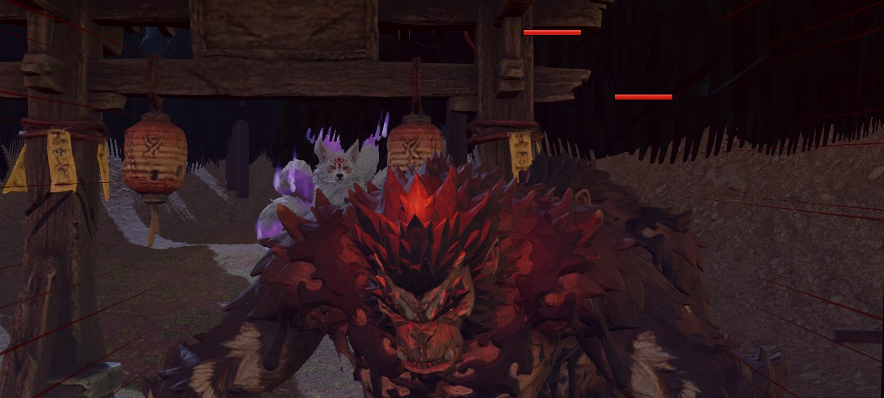
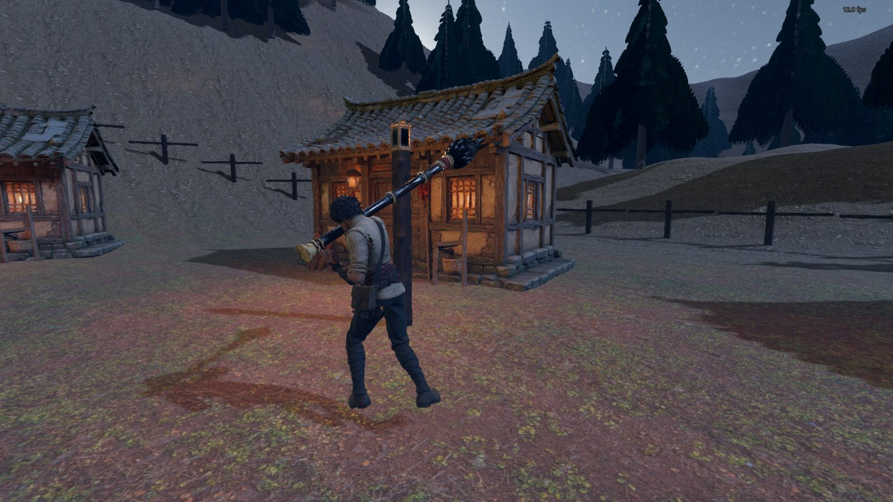
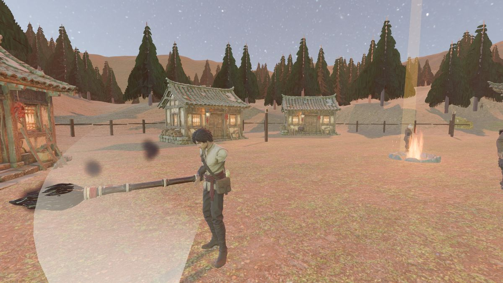
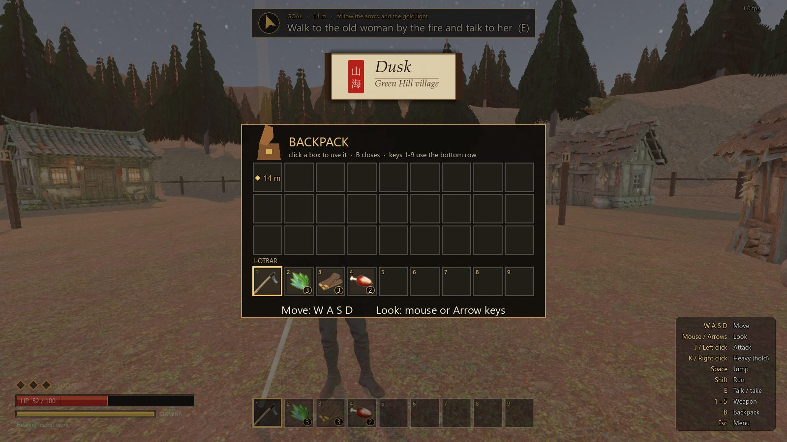
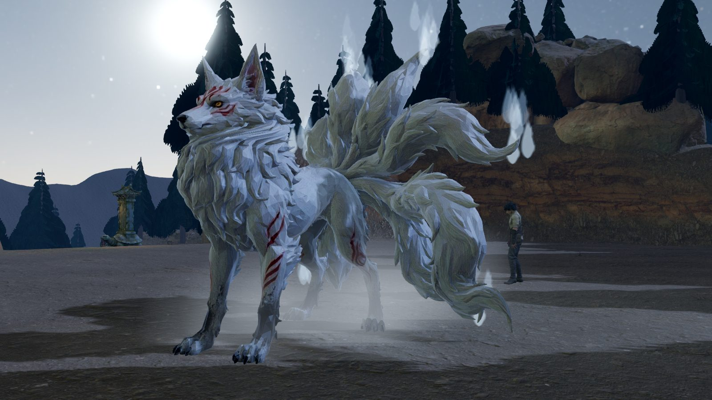

Controls操作How to play怎么玩
WASDMove移动
Mouse鼠标Look视角
J / LMBAttack攻击
K / RMBHeavy attack重击
SpaceJump跳跃
ShiftRun奔跑
ETalk, pick up对话、拾取
1-9Hotbar快捷栏
BBackpack背包
EscMenu, settings菜单、设置
Goal目标Bind, do not kill封而不杀
Survive the night raid on Green Hill village. When a red “!” shows over a Jufu, step out, then hit back.在夜袭中守住青丘村。居茀头顶出现红色“！”时，先闪开，再反击。
Climb to the den of the ink-poisoned fox, put out her tail flames, and choose how it ends: earn her trust, or bind her.上山到中墨的狐狸洞穴，熄灭她的尾焰，再选择结局：赢得她的信任，或将她封印。
Health comes back on its own. Rest at a stone stele to save.生命会自行恢复，在石碑旁休息即可存档。
Credits致谢Team 山海莫怪
- Characters, props and intro clips: Miora 3D Studio and its AI video tools. Fox body: Hunyuan3D-2.1.角色、道具与片头视频：Miora 3D Studio 及其 AI 视频工具；狐狸主体：混元3D-2.1。
- Environment: Poly Haven (CC0). Sound: CC0 sources (OpenGameArt, Wikimedia Commons).环境：Poly Haven（CC0）；音效：CC0 来源（OpenGameArt、Wikimedia Commons）。
- Story source: the Classic of Mountains and Seas (山海经), public domain.故事来源：《山海经》（公有领域）。